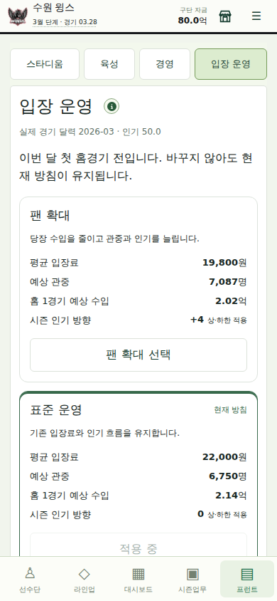
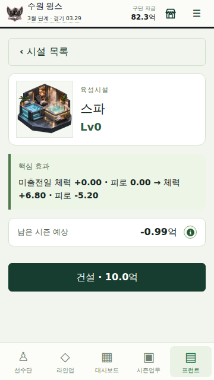

LEGACY9 · 0.2.3 · 기획 감사와 실제 구현
오늘의 수입과
다음 시즌의 관중.
입장 운영에 선택을 만들고, 시설 투자의 설명을 실제 효과와 맞췄습니다.
391 / 391타입·회귀 검사
5,400경기실제 코어 정규시즌
12회오프시즌·저장 전환
Overview · 범위와 방향
시작 당시 main 0.2.1과 18커밋 앞선 별도 0.2.2 피드백을 대조했습니다. 기존 피드백은 378개 검사·타입 검사·빌드를 재실행한 뒤 일반 fast-forward로 main에 통합했습니다. 이를 새로 만든 기능으로 세지 않습니다.
이번 신규 범위는 입장 운영 3선택, 실제 수입·인기 원장, 모바일 선택/저장, 시설 회복·투자 견적 정합성입니다. 깊이 있는 경기·성장·트레이드 엔진을 다시 쓰거나 유료 상품 수를 늘리지 않았습니다.
Before / After
| 영역 | 기존 main 0.2.1 | 이번 도달 상태 |
|---|
| 구단주 | 출전 점유율 미달 시 종합59점 상한 | 기존 피드백 통합: 점유율 평가 제외·우승 최소80점·PS 확정 반영 |
| 상점 | 일반 기록포인트 꾸미기 상점 | 기존 피드백 통합: 일반 준비 중·개발자 전용 시험·기존 잔액/보유권 보존 |
| 입장 운영 | 평균22,000원 고정·시설 구매만 선택 | 19,800 / 22,000 / 24,200원과 관중·장기 인기 교환 |
| 회복 시설 | 스파 Lv1 견적+1.5/−1, 실제+6.8/−5.2 | 정산과 견적이 같은 함수를 사용. 실제 효과는 상향하지 않음 |
| 투자 판단 | 현재 입장 정책을 반영할 경로 없음 | 시설·운영팀장 견적에 현재 정책의 관중 적용 |
Major Features · 실제 신규 구현
시설 → 입장 운영에서 팬 확대·표준 운영·수익 우선을 비교합니다. 실제 경기 달력의 해당 월 첫 홈경기 전에 한 번 변경하며, 선택하지 않으면 기존 방침이 계속됩니다. 강제로 선택을 요구하는 자동 팝업이나 새 화폐는 없습니다.
현재 조건의 예상 수입과 실제 홈경기 정산을 분리합니다. 완료한 홈경기마다 관중·단가·홈 수입·경영 매출·인기 전후가 저장됩니다. 같은 경기를 다시 읽거나 정산 함수를 반복해도 중복 효과가 발생하지 않습니다. 원정 수입은 상대 구장 기준입니다.
Owner Goals · 평가와 운영 루프
개막 전 우승 도전/전력 유지/세대 교체, 구단주 성향, 연봉 한도, 성적 평가, 신뢰, 3년 평균 평가, 다음 시즌 지원금의 기존 루프를 유지합니다. 타석·투구 점유율은 점수에서 제외하고 순위·연봉 점수를 재가중합니다. 정규시즌 1위 또는 포스트시즌 우승은 방침과 무관하게 최소80점입니다.
구단주 평가가 육성 방향을 이유로 야구 성취를 무효화하지 않도록 한 변경입니다. PS 우승이 뒤늦게 확정되면 같은 시즌의 평가 직전 신뢰에서 다시 계산하며 반복 가산하지 않습니다. 10구단 공통 평가·AI 추상 지원 예산 연결은 유지합니다. 세대 교체 자체의 인물 서사·육성 재미가 완성된 것은 아닙니다.
Economy & BM · 실제 경계
운영자금·훈련포인트는 기존 핵심 자원입니다. 기록포인트는 이전 무료 실험 잔액과 테마 보유권 보존용이며 일반 지급/구매를 중단합니다. 새 프리미엄 재화·환율·유료 선수·성장 배수는 넣지 않았습니다. 일반 상점은 준비 중이고, 개발자 시험은 미연결 결제 요청을 거부합니다.
꾸미기만으로 BM을 확정하지 않습니다. 실제 육성/회복 프로그램의 반복 효용, 추가 시나리오, 시각 팩, 운영 계획 보관 같은 후보를 무료 접근·상한·영구 보유권과 함께 검토했습니다. 아직 상품·가격·서버 결제·광고 보상이 없는 상태입니다. 무료 정상 진행을 막아서 과금을 유도하지 않습니다.
상세 재화 흐름·상품 유형·반복/시즌 구매·광고·비구매 경험·결제 경계는 경제·BM 설계 문서에 분리했습니다.
Other Design Improvements · 감사에서 고친 것
회복 시설의 실제 정산은 이미 4배 규칙을 사용하지만 견적은 오래된 기본 계수를 썼습니다. 스파 Lv1의 추가 회복 +6.80/−5.20, 컨디셔닝 Lv1의 컨디션·의욕 각각+0.96을 공통 함수에서 표시합니다. 미출전일 효과와 기존 상·하한도 분명히 했습니다.
모든 감사 영역의 A~E 판정·선택 이유·구현 비용/회귀 위험은 전체 기획·구현 감사를 참고하세요. 스태프 인물 DB·불확실한 스카우팅·외국인 별도 시장·10년 계승·경영 사건은 이번에 완성했다고 주장하지 않습니다.
Balance · 수식과 관측
| 선택 | 평균 티켓 | 즉시 관중 배율 | 연간 인기 방향 |
|---|
| 팬 확대 | 19,800원 | 1.05 | +4 |
| 표준 운영 | 22,000원 | 1.00 | 0 |
| 수익 우선 | 24,200원 | 0.95 | −4 |
현행 티켓 ±10%, 가격 변동률 d에 대해 수요 배율=1−0.5d, 실제 홈경기당 인기 변화=±4/(시즌경기수/2)입니다. 이는 실제 KBO 추정치가 아닌 작은 시험 범위입니다. 좌석·관중률·인기 상한과 기존72경기 수입×2를 유지합니다. 표준 방침의 원 단위 매출은 이전과 같습니다.
아래는 모드별 한 시드·동일 선수로 수행한 결과입니다. 초기 실제 경기/선수 상태/난수 해시가 세 방침 모두 같습니다. 팬 확대는 첫해 수입을 포기하지만 72경기 3년차의 연간 티켓 수입은 표준보다 높아졌습니다. 총현금은 여전히 표준보다 낮습니다. 모든 운영 전략의 정답을 정한 결과가 아닙니다.
| 모드 | 방침 | 연도 | 기말 현금 | 연간 티켓 수입 | 인기 | 홈 영수증 |
|---|
| 72 | 표준 운영 | 2026 | 157.70억 | 117.05억 | 50.0 | 0 |
| 72 | 표준 운영 | 2027 | 262.11억 | 110.98억 | 50.0 | 0 |
| 72 | 표준 운영 | 2028 | 362.31억 | 102.90억 | 50.0 | 0 |
| 72 | 팬 확대 | 2026 | 153.99억 | 113.34억 | 54.0 | 36 |
| 72 | 팬 확대 | 2027 | 256.99억 | 109.57억 | 58.0 | 36 |
| 72 | 팬 확대 | 2028 | 358.23억 | 103.94억 | 62.0 | 36 |
| 72 | 수익 우선 | 2026 | 160.45억 | 119.80억 | 46.0 | 36 |
| 72 | 수익 우선 | 2027 | 265.17억 | 111.29억 | 42.0 | 36 |
| 72 | 수익 우선 | 2028 | 363.14억 | 100.66억 | 38.0 | 36 |
| 144 | 표준 운영 | 2026 | 173.35억 | 124.71억 | 50.0 | 0 |
| 144 | 팬 확대 | 2026 | 169.24억 | 120.59억 | 54.0 | 72 |
| 144 | 수익 우선 | 2026 | 176.44억 | 127.79억 | 46.0 | 72 |
후반 현금 과잉은 남았습니다. 72경기 표준3년차 기말현금은 약362.31억입니다. 새 정책을 현금 소비처 완성으로 부르지 않으며, 잔액 강제 삭감·이월 캡·임의 유지비 인상도 하지 않았습니다. 별도162개 민감도 표는 고정 순위/시설의1·3·10년 매출식 비교이지10년 전체 경기 플레이가 아닙니다.
Technical Changes · 구조와 호환성
ticket-policy.ts 정책/이력 조회, ticketing.ts 선택·견적·실제 영수증·저장 검증, facility-effects.ts 회복 계산을 추가했습니다. 기존 Career에 선택적 ticketing 필드만 추가해 구세이브를 소급 변경하지 않습니다. 현재 시즌 결과와 과거 아카이브 장부를 연결하고 중복·누락·가격/금액/인기 변조를 거부합니다.
UI는 기존 자동저장 성공 뒤 상태 교체 방식을 사용합니다. 저장 실패 시 이전 선택이 남고 월별 기회를 잃지 않습니다. 기존 저장 스키마·난수·선수 성장식·계약식을 교체하지 않았습니다. 가격 규칙을 추후 바꿀 때는 v1 영수증을 새 공식으로 검증하지 않도록 정책 버전 처리가 필요합니다.
Validation · 실행한 검증
391개 검사 전부 통과, TypeScript·빌드 통과. 신규13개 검사 외 기존378개를 보존했습니다. 72경기3방침×3년과144경기3방침×1년, 정규5,400경기 및12회 PS·은퇴·갱신/FA·드래프트·다음 시즌 저장 전환을 완료했습니다. 오래된 테마 보유·잔액과 평가/지원금의 반복 호출 불변도 확인했습니다.
344×882,360×640,390×844,1280×844 Chromium에서 실제 선택·도움말·월 잠금·저장 실패·재접속·영수증·스파 효과·일반 상점 차단을 확인했습니다. 가로 넘침·페이지 오류0. 초기 저장과 경기 진행은 공통 코어로 만들었고 이후 선택/저장 조작은 UI로 검사했습니다. 실물 기기 테스트는 아닙니다.
검사·소스 해시 · 전체 시뮬레이션/민감도 · 브라우저 검사

기존 모바일 UI에 1열 선택·견적·현재 방침을 연결했습니다.
기존 실제 회복량을 구매 전에 확인합니다.Known Issues · 남은 문제
시설 완성 후 반복 투자와 현금 과잉, 구단별 팬 수요의 차이, AI의 상세 시설/팬 운영, 인물형 스태프·육성 서사, 회차 계승은 미완성입니다. 가격 수요·팬 증감은 시험값이며 모드별 한 시드만 전체 시즌으로 검증했습니다. 실물 Android/iOS·Safari·전체 UI 수동 다년 플레이는 하지 않았습니다.
실결제·계정 보유권·복원/환불·광고는 미연결입니다. 기존 번들 크기 경고도 남습니다. 로컬 관리형 브라우저의 루프백 차단은 GitHub 격리 Chromium 검증으로 대체했습니다. 초기 변경 전달 오류는 해시 검증에서 차단됐고 소스에 적용되지 않았습니다. 144경기3월에 홈경기 없는 구단을 시험하던 검증 스크립트는 첫 홈경기 달까지 실제 진행하도록 수정했으며 게임의 잠금 규칙을 약화하지 않았습니다.
0.2.x Backlog · 다음 우선순위
| 순위 | 과제 | 완료 기준 |
|---|
| P0 | 시설 완성 후 반복 운영 투자 | 인물형 스태프·육성/회복 중 하나를 기존 연간 예산에 연결. 다수 시드의 현금·효과·대체 선택 비교 |
| P0 | 팔 만한 직접/시각 콘텐츠의 가치 검증 | 무료 정상 진행과 구매 상한 비교. 실제 적용과 소유 범위가 없는 상품 등록 금지 |
| P1 | 팬 수요·AI 운영 보정 | 사용자/AI 공정성, 구단별 성적/인기 민감도 및 여러 시드 검증 |
| P1 | 다음10년 계승 | 선수·현금·시설·보유권의 경로별 미리보기 후 판단. 강제 잔액 삭감 금지 |
| P2 | 결제·광고·계정 서버 | 실제 상품 확정 뒤 영수증·중복·복원·환불·권한 검증 |
Commit History · 영속 기록
기준 main 02b0f7d, 기존 피드백 통합 04f60ab입니다. 신규 주요 구현은 82b2471(입장 코어), eb3b2f7(모바일·견적), 7b6dd21(실제 브라우저 검사)입니다. 아래는 기존 피드백 이후 이번 작업의 저장 이력으로 검증 인프라·전달 커밋도 구분 없이 숨기지 않습니다. 보고서 생성 이후의 증거 저장·정리는 Git 이력에서 추가 확인합니다.
| 커밋 | 목적 |
|---|
| d605ee493c55 | 검증: 원본과 미통합 피드백의 격리 감사 작업공간 준비 |
| af2c42d1d56b | 통합: 재검증한 0.2.2 구단주·상점 피드백을 감사 브랜치에 반영 |
| 31757cfd6b24 | 검증: 경로·해시·원격 HEAD를 대조하는 0.2.3 작업 단위 저장 |
| 871b46d81157 | 검증: 입장 운영 코어 변경을 해시 대조와 회귀 검사에 전달 |
| dabd2bab0458 | 검증: 변경 전달을 읽을 수 있는 차이 파일과 전후 해시 검증으로 단순화 |
| 2ee6087d3764 | 검증: 입장 운영 코어와 9개 회귀 검사의 원문 차이 전달 |
| 82b2471607fd | 기능: 입장 운영 선택과 실제 홈경기 수입·인기 원장 연결 |
| b0c6dc8ab109 | 검증: 큰 UI 파일도 원문 해시와 최소 변경 구간으로 안전하게 전달 |
| 2feaf67db818 | 검증: 모바일 선택·시설 견적의 최소 변경 구간과 회귀 검사 전달 |
| eb3b2f71e8cf | 기능: 모바일 입장 운영 선택과 실제 회복량 기반 시설 견적 연결 |
| 7b6dd2161fba | 검증: 입장 운영의 모바일 조작·저장 실패·시설 견적 브라우저 검사 추가 |
| 1e421ffd1cac | 검증: 격리 브라우저에서 0.2.3 모바일 조작과 저장 복원 확인 |
| 81f623d3ce46 | 검증: 0.2.3 문서·버전·게임 내 리포트 경로의 변경 단위 전달 |
| 7a250d409ad0 | 문서: 0.2.3 감사·핵심 규칙·BM 경계와 버전 경로 갱신 |
| 3578d1d7ea93 | 검증: 5400경기·12회 시즌 전환과 입장 정책 민감도 재현 스크립트 추가 |
| 516f5b195bd0 | 문서: 실제 검증 증거에서 0.2.3 HTML 리포트와 사이트용 사본 생성 |
| 87cf08157500 | 검증: 빌드에 포함된 0.2.3 리포트 링크·이미지·모바일 폭 검사 |
| e989d6575b3f | 검증: 기존 인계 하네스와 보고서 증거 형식의 정합성 보완 |
| 2123d2de3a31 | 검증: 0.2.3 증거를 기존 하네스의 오류·화면 스키마와 일치 |
| 1733e2ad6ddb | 검증: 최종 회귀·시즌·브라우저·보고서 확인 후 증거를 영속 저장 |
검증 기준 HEAD: 1733e2ad6ddbe0863781848f0720932a9d39f907
전체 SHA 이력 · 핵심 규칙·확장 경계